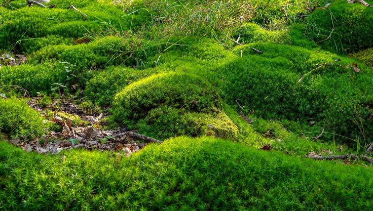
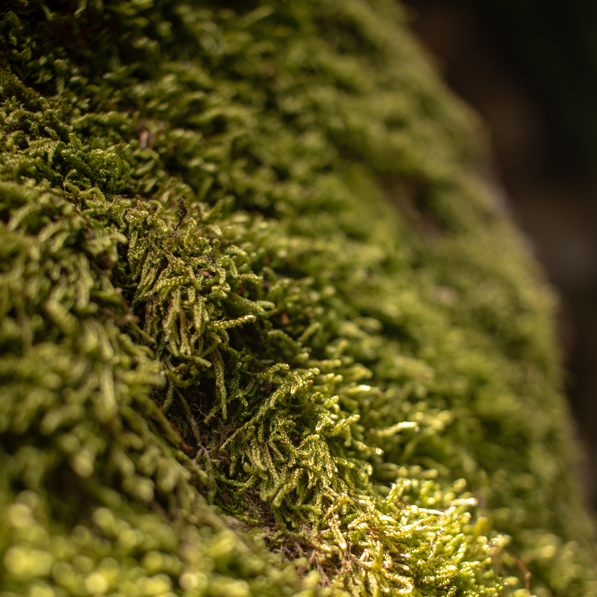

Le passage des algues aux mousses s'est produit lors de la sortie des eaux des végétaux, un processus évolutif progressif qui a pris entre 50 et 100 millions d'années. Cette transition majeure a débuté il y a environ 470 à 500 millions d'années, durant la période de l'Ordovicien, à partir d'ancêtres d'algues vertes d'eau douce proches des Charophytes.

